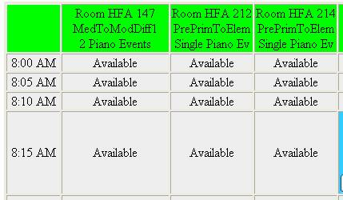
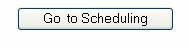
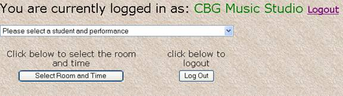
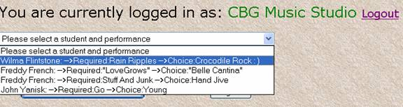
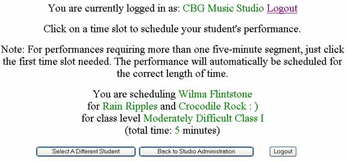
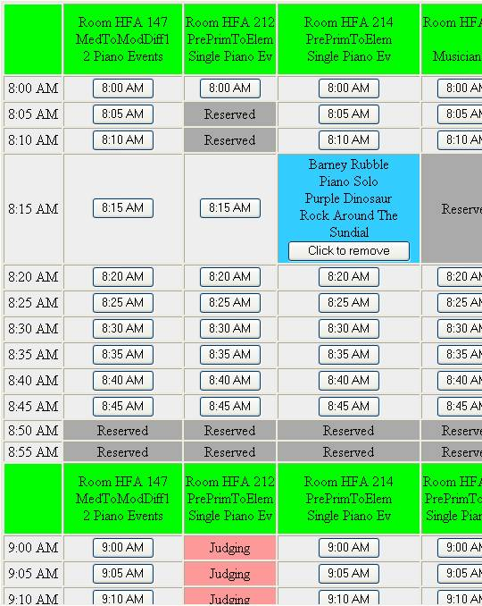
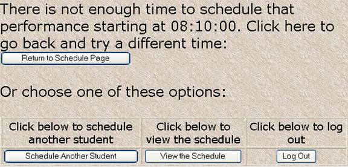
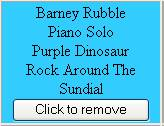

Scheduling worksheet and tutorial
Hello! During this tutorial, you will see how simple it is to schedule your students.
Login to the FestivalWare website (www.festivalware.net). Enter your Organizer Login information, and click the Login button
Once at Studio Administration, click on the View Schedule button.

The View Schedule selection shows all the available times for performances and all the room assignments and performance levels. You may have to scroll the window to see all the possible selections. (The View Schedule page looks just like the regular schedule page, but you can't add students from here). Plan out where you would like to schedule your students. Pay particular attention to specialties like ensembles, voice, and flute students!
Note: Piano Duos and Concertos are to be scheduled only in room HFA 147 regardless of class level.
 Once you have an idea as to where you would like your students, click the Go To Scheduling button at the top of the page.
You will see this on the first scheduling page:

Note: If you have all your performances scheduled, you will get a message stating that you have no more students to schedule.
Select a student from the drop down list, as shown here:

Now click the Select Room and Time button at the bottom of the window.
You will go to the Scheduling page. The top of the page looks like this:

Note that Wilma's two selections and her total playing time are listed in green.
If you want to select a different student, jump back to the Administration page, or Logout, just click one of the buttons. Nothing will happen to the schedule if you do.
The body of the Scheduling page looks like this (see below). Notice the green headers across the table for each hour. These list the room numbers, the judging levels, and what performances should be scheduled in the rooms. Note that room HFA 147 (first column) is for events requiring two pianos. HFA 147 is also for solo piano events as indicated in the header. The Voice and Flute studios are listed on the table to the right hand side (sorry, you can't see them here, I ran out of room!).

Let me point out a few things here. First, notice in this example that room HFA 212 (second column) is unavailable at 8:05 and 8:10. Another teacher has already scheduled a student then. I won't be able to select either of those times.
Notice also that the same room has a red Judging label starting at 9:00. You guessed it… in this example, that's when I will be judging! Obviously, I can't schedule Wilma in my room when I'm judging.
Finally, notice that room HFA 222 has a blue block at 8:15. Barney is one of my students, and I have already scheduled him to perform at that time. His performance is less than 5 minutes long, so he only needs one time "block".
To schedule Wilma (remember her, from the page before? We selected her from a list), I simply click on whichever time I would like to place her. Clicking on a time slot takes me to the final page, which will tell me whether the process was a success or not. If there wasn't enough time for the performance I will get an error, as shown below. I can return to the schedule page and try again. In this example, I tried to schedule a 15 minute performance at 8:10 in room HFA 222 (right before Barney's time…see above).

To remove a performance from the schedule, click on the Click to Remove button at the bottom of the blue entry box. No, you can't unschedule other people's students! Scheduling is first come, first served, so login early!
Removing a performance from the schedule will place it back in your list of students and unscheduled events (on the first page of scheduling).